Expert views from around the GATHER.nexus network.
Practical writing for finance teams and fractional CFOs running multi-entity groups on Xero and QuickBooks Online.

Month-end close and the multi-entity finance layer: how Mayday and GATHER.nexus differ on intercompany control, consolidation, group reporting and planning.
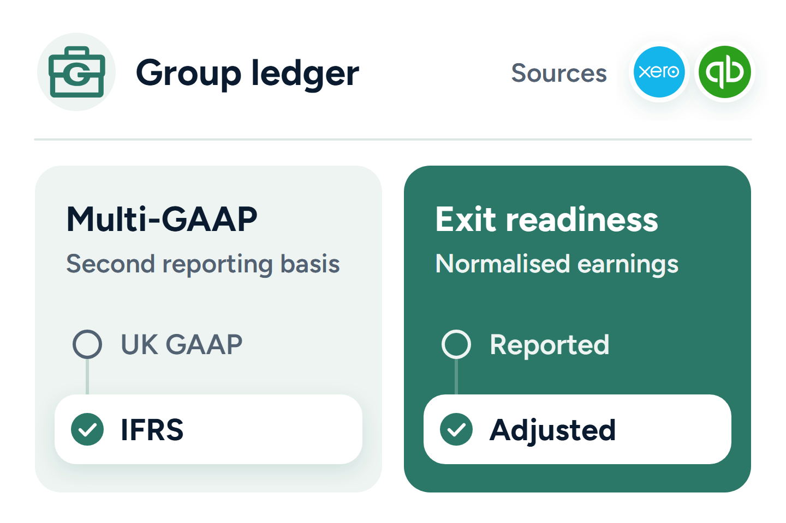
A group-level ledger above Xero and QuickBooks Online can support consolidation, multi-GAAP reporting for one company, and monthly earnings and working capital normalisations.
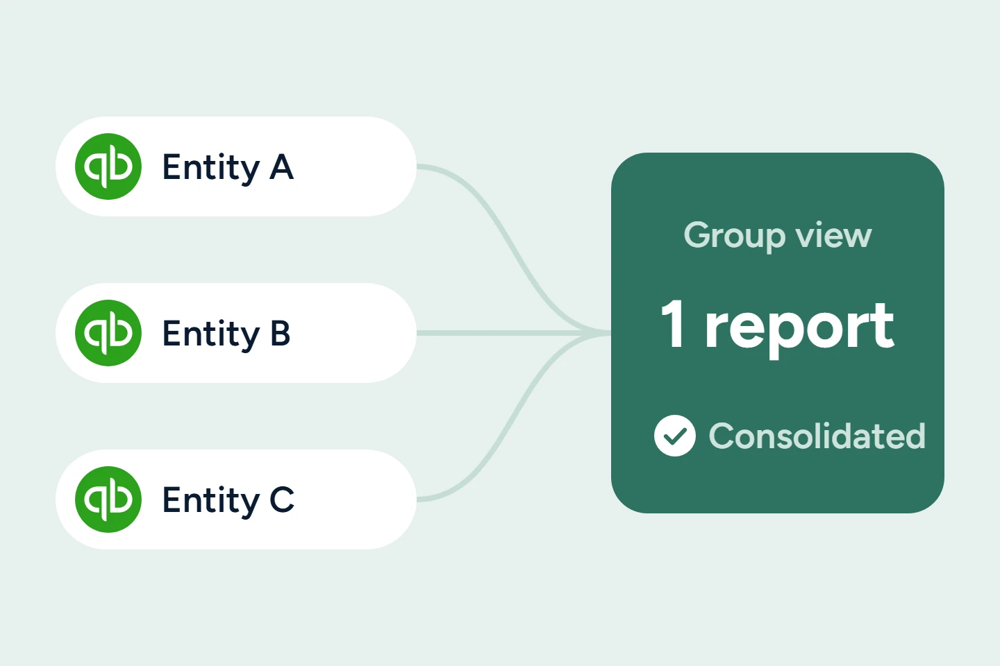
QuickBooks Online is built for a single organisation. Groups need a reporting layer for consolidated accounts, intercompany balances and multi-currency reporting.
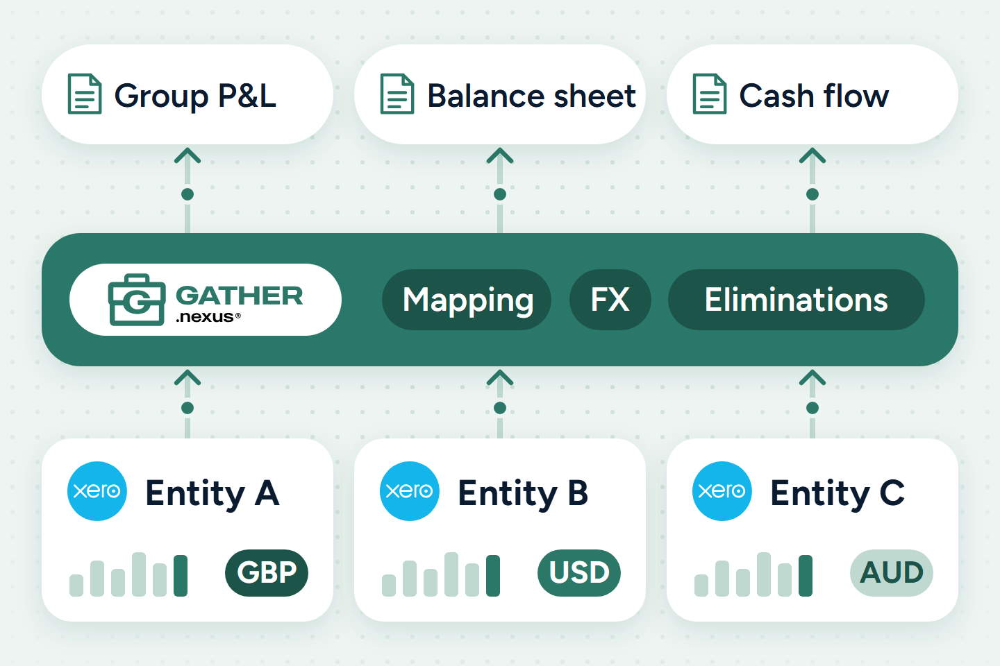
Xero remains the ledger for each company. Consolidation, eliminations and group reporting sit above those organisations.
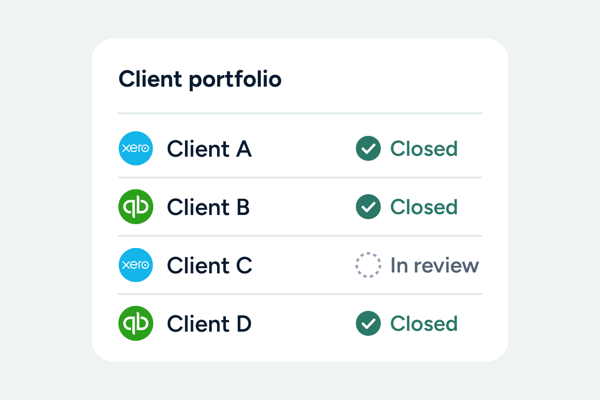
Fractional CFOs can run multi-entity reporting for more than one client from a single platform instead of a separate spreadsheet model for each group.
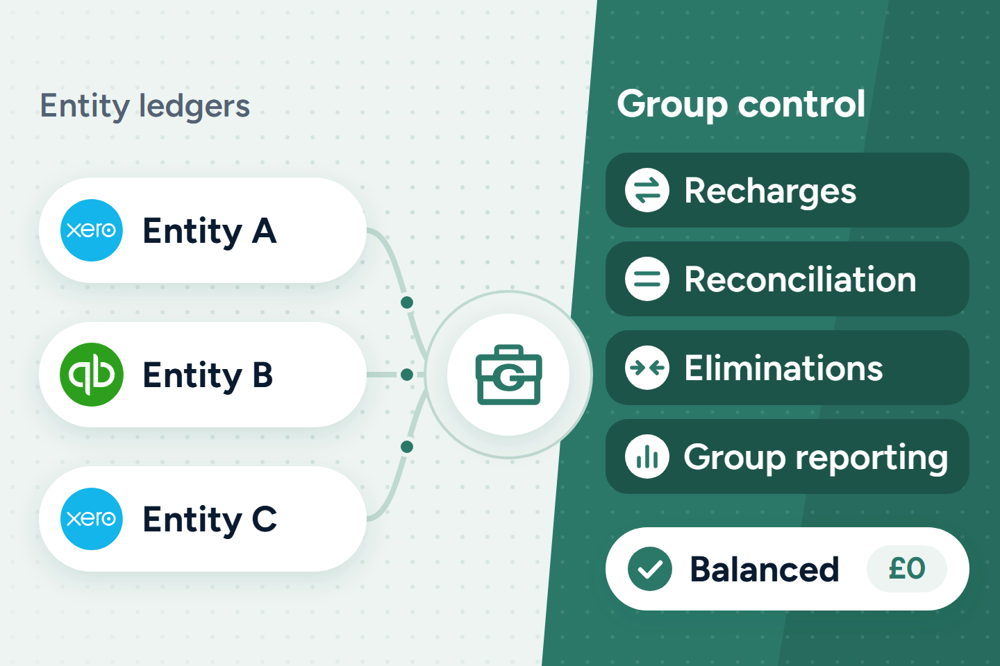
Neither Xero nor QuickBooks Online was designed to manage intercompany recharges, reconciliations and group consolidation across legal entities.
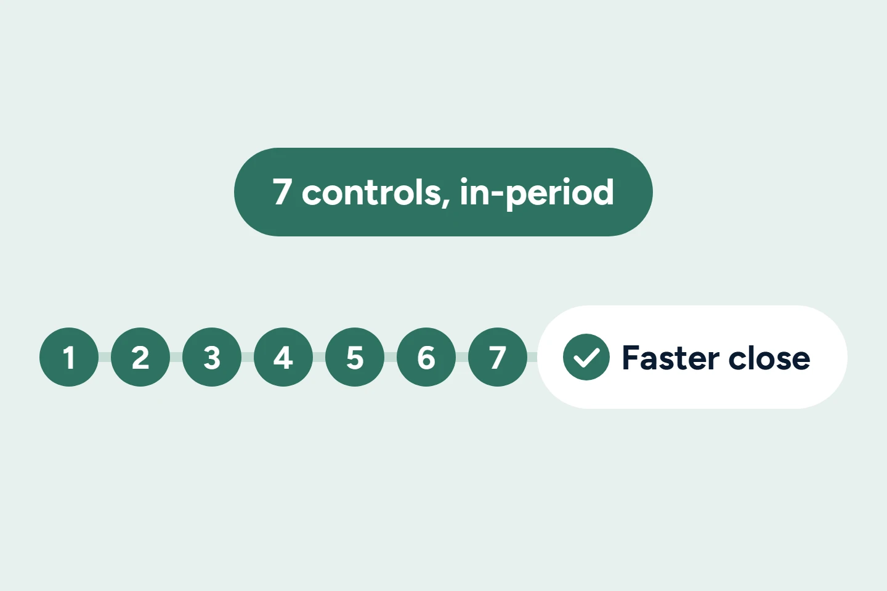
Manual spreadsheets and disconnected workflows slow the close. These controls keep intercompany balances explainable before group reporting starts.
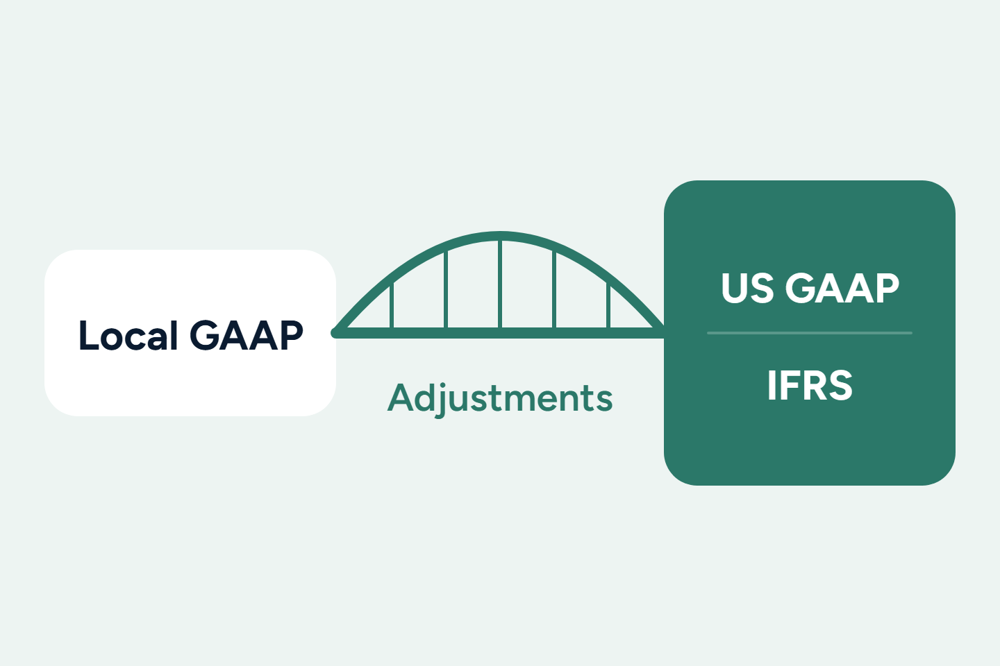
Cross-border groups often need a local GAAP ledger and a second reporting basis, such as IFRS or US GAAP, without replacing the statutory books.
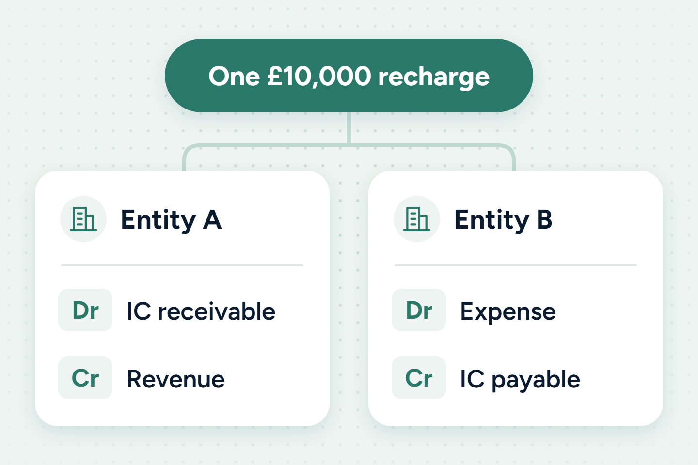
An intercompany transaction needs a balanced entry in each entity. Quadruple entry keeps both sides of that posting together.
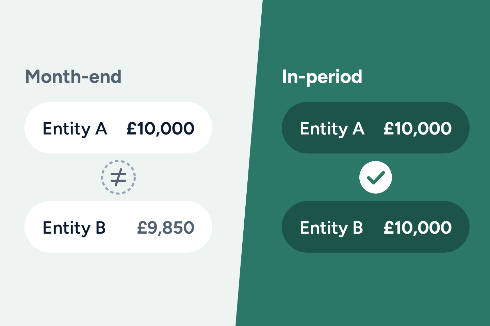
Spreadsheets can carry intercompany accounting while a group is small. They become a source of delay and error as the number of entities grows.
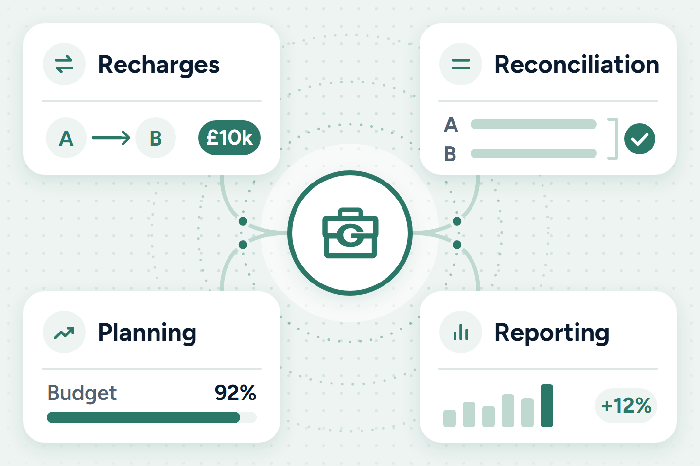
New entities add new close steps. Fragmented recharges, reconciliations and consolidations make the group numbers harder to trust.
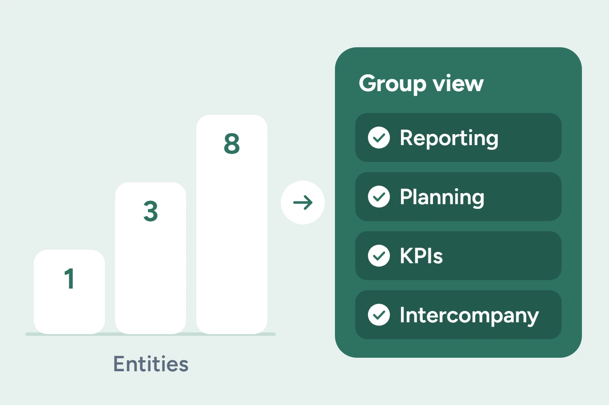
A multi-entity platform connects Xero and QuickBooks organisations so finance teams can map, aggregate, eliminate and report at group level.
Start your 30-day free trial, full access, no credit card required.